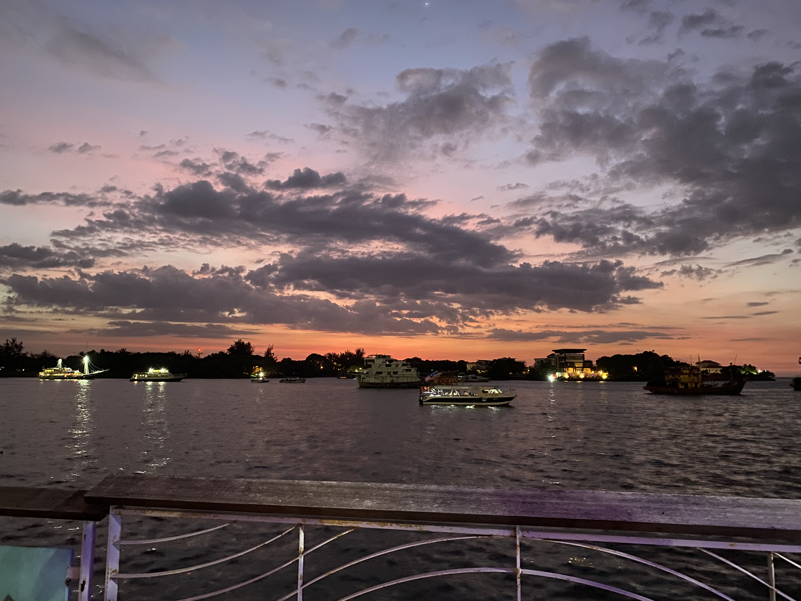

여행사 소개
입소문이 자자한 트래블러, 뭐가 다를까요?
하나. 고객님의 안전을 보장하지 않는 유일한 여행사!
둘. 고객님의 편의보단 여행사의
편의를 최우선으로 여기는 여행사!
셋. 여행을 좋아하지만 잘 알지는 못하는 여행사!
넷. 외국 체류 경험이 없는 가이드가 길잡이를 하는 믿음직한 여행사!
전세계의 단하나의 여행사, 트래블러와 함께하세요 
입소문이 자자한 트래블러, 뭐가 다를까요?
하나. 고객님의 안전을 보장하지 않는 유일한 여행사!
둘. 고객님의 편의보단 여행사의
편의를 최우선으로 여기는 여행사!
셋. 여행을 좋아하지만 잘 알지는 못하는 여행사!
넷. 외국 체류 경험이 없는 가이드가 길잡이를 하는 믿음직한 여행사!
전세계의 단하나의 여행사, 트래블러와 함께하세요
코타키나발루(룰렛 여행)
룰렛 여행 결정 다음날 오전 11시 35분 비행기/ 2박 3일 일정
- 숙박 : 에어비엔비_수트라에비뉴
- 꼭 해야할 일 : 스쿠버 다이빙
- 룰렛 여행은 처음이라 이상한 거 걸리면 어쩌나 싶었는데 보기 내용이 다 흥미로웠습니다! 이렇게 즉흥적으로 여행을 떠나는 것은 처음이라 되게 설레고 즐거웠던 것 같아요!
평소 결정하는데 시간을 많이 쓰는 편이라 여행 일정 짜는 거도 오래걸리는데 이 여행에서는 정말 빠르게 할 수 있었어요.
꼭 해야할 일에서 스쿠버 다이빙이 걸려 여행사에서
추천해 준 제셀톤 포인트에 가서 스쿠버 다이빙을 했습니다.
스쿠버 다이빙은 처음이라 많이 두근댔지만 값싼 가격에 색다른 재미를 느낄 수 있어서
좋았어요!
다음에 여행하게 된다면 다시 이 룰렛 여행을 선택할 것 같아요ㅎㅎ
별점 5점 만점에 4.5점 드립니다!
TRAVELER